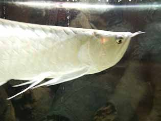

Arowanas & Saratogas
A GUIDE TO CARING FOR AROWANA & SARATOGA

Probably the most majestic fish within modern day fish keeping aquariums.
Named the dragon fish by Chinese aquarists for good reason, its
large coloured scales and beautiful movement make it seem like a shiny monster
in the water.
This fish has many different variations leading to huge
differences is pricing. The Australian version of the Arowana is the Saratoga,
both the Jardini and Leichardti are great additions, they uphold the same
characteristics as the Arowana’s found overseas, its just they are legal
within Australia.

Silver Arowana
- The silver Arowana is by far the most common and popular in the United States due
to its cheap price and small starting size. You must not be fooled however, for it
can grow up to 2 feet in length and easily break through aquarium glass if it becomes
startled or angry.

Green & RTG Arowana
- Other variations include the Green Arowana,
which is slightly more expensive and then the RTG variety, which are imported
from overseas with a microchip.
- RTG species are near extinction and
so there prices have become astronomical, around $1000-5000 for a single fish.
If you are not an experienced hobbyist then don’t even bother. They are the
same as any other type of arowana, it is just they are becoming so rare the
price and demand has gone through the roof.

Feeding Arowana
- Arowana’s will need to be fed a composite diet of both meat and vegetables.
If just fed fatty, meaty food’s there will be a build up of fat above its eye,
resulting in the unwanted “drop eye” syndrome which substantially decreases its
reselling value.
- Live foods will be a nice treat for these monsters
although it can promote agression. They are best kept with a small school
of Arowana's but of course this is most difficult due to the extremely
large tank you would need. Try not to turn your Arowana sour and into a
blood thirsty predator by only offering live food as a treat or occaisonal
snack.
- Crickets and mealworms are great and whats even better is
you are able to breed these seperately to have a constant supply of food!

Temperament
- This fish should not be kept with any other smaller fish in the aquarium,
it will need to be completely solitary unless with its own kind or other huge
fish. Try to keep more than two if you keep a species tank as just having
two can become very territorial.